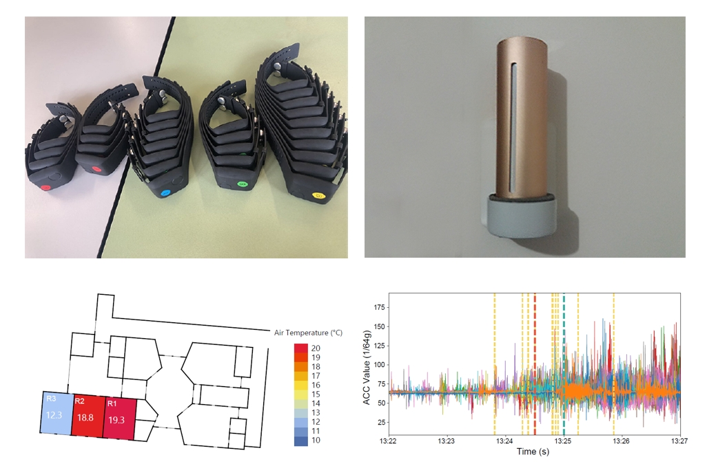
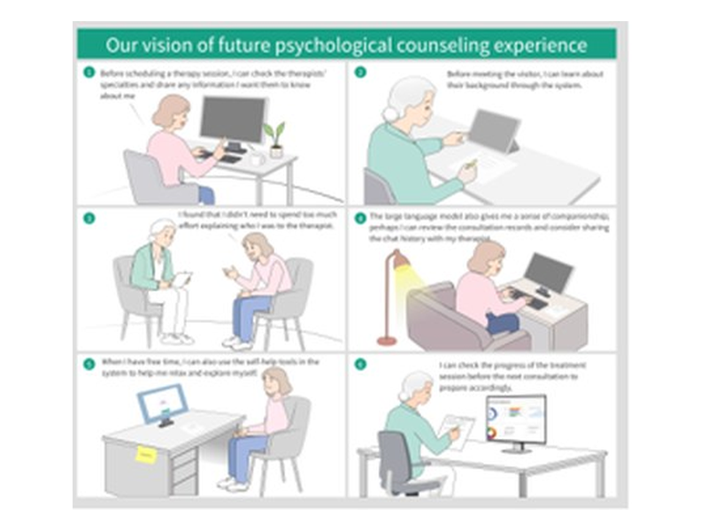
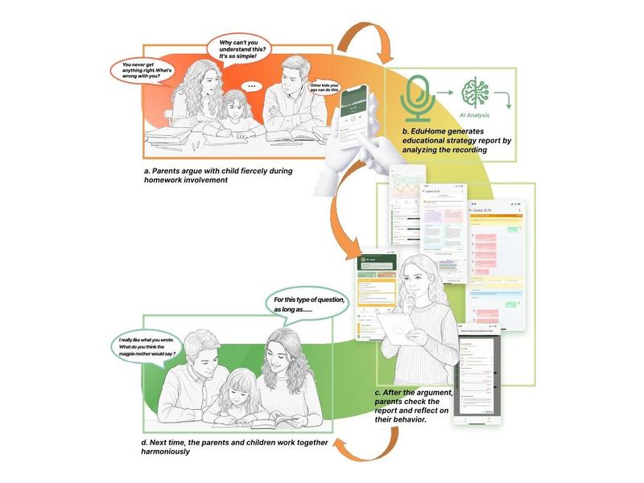
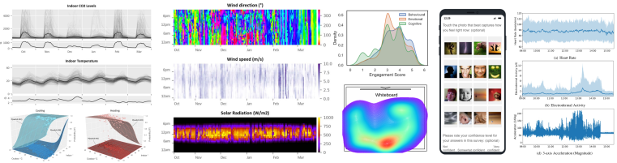
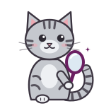

Research Overview研究方向
My research sits at the intersection of ubiquitous computing and HCI and spans three connected strands: sensing and modelling human behaviour and mental states, understanding people’s needs to inform design, and building interactive systems that support well-being.研究位于普适计算与人机交互的交叉领域，包含三条相互衔接的主线：感知与建模人的行为与心理状态，理解人的需求以指导设计，以及构建促进身心福祉的交互系统。
-

Sensing and Modelling感知与建模
Modelling behaviour, emotion and mental states from smartphone, wearable and environmental sensing data collected in the wild.利用真实场景中的手机、可穿戴设备与环境传感数据，对人的行为、情绪与心理状态进行建模。
-

Understanding and Design理解与设计
Empirical studies of how people learn, live and interact at home and in class, informing the design of supportive technologies.通过实证研究理解人在家庭与课堂中的学习、生活与互动，为支持性技术的设计提供依据。
-

Interactive Systems and Intervention交互系统与干预
Building and evaluating interactive systems, including LLM-based agents, that support mental well-being and everyday life.构建并评估交互系统（包括基于大语言模型的智能体），为心理健康与日常生活提供支持。
News动态
- Oct 20262026.10At UbiComp/ISWC 2026, our team received the 🏆 Best Paper Award at the WellComp Workshop and a 🏆 Best Poster Award!团队在 UbiComp/ISWC 2026 上获得 WellComp Workshop 🏆 最佳论文奖，以及 🏆 最佳海报奖！
- Oct 20262026.10I co-organised the 11th Mental Health Workshop and the UbiSense Workshop at UbiComp/ISWC 2026 in Shanghai, China.在上海 UbiComp/ISWC 2026 期间共同组织第 11 届 Mental Health Workshop 与 UbiSense Workshop。
- Oct 20262026.10I co-organised the Pre-UbiComp international workshop Scaling UbiComp/ISWC: From Lab to Market in Shenzhen (Oct 8–9). 联合举办UbiComp 会前国际研讨会“普适计算的规模化之路：从实验室到市场”（Scaling UbiComp/ISWC: From Lab to Market，深圳，10 月 8–9 日）。
- Aug 20262026.08I served as Vice Chair of the forum Industry–Academia Dialogue: Putting Interaction Experience Research into Practice at HMCC 2026 in Changsha, China.担任 HMCC 2026（长沙）高端论坛“产学研对话：交互体验研究如何落地”副主席。
- Jan 20262026.01Our paper on parental division of labour was accepted by CHI 2026!我们关于家庭教育中父母分工的论文被 CHI 2026 录用！
- Dec 20252025.12I serve as the Chair for Student Competition and Challenges at UbiComp 2026!担任 UbiComp 2026 学生竞赛与挑战赛（Student Competition and Challenges）主席。
- Nov 20252025.11Our therapy chatbot paper was accepted by CSCW 2026!我们关于心理治疗聊天机器人的论文被 CSCW 2026 录用！
- Oct 20252025.10Spoke at the N2Women Panel Discussion “Women in Research: Navigating Challenges and Building Futures” at UbiComp 2025.受邀参加 UbiComp 2025 N2Women 圆桌讨论“Women in Research: Navigating Challenges and Building Futures”。
- Sep 20252025.09Invited as an AC for CHI ’26 on the Learning, Education and Families Subcommittee.受邀担任 CHI ’26 Learning, Education and Families 分委会 AC。
- Sep 20252025.09Invited as a TPC member of PerCom 2026.受邀担任 PerCom 2026 程序委员会（TPC）委员。
- Jul 20252025.07Our family interaction analysis paper was accepted by IMWUT!我们关于亲子家庭互动分析的论文被 IMWUT 录用！
Show earlier news展开更早的动态Hide earlier news收起
- Jun 20252025.06Welcome to submit papers to our UbiSense Workshop at UbiComp/ISWC 2025.欢迎向我们在 UbiComp/ISWC 2025 组织的 UbiSense Workshop 投稿。
- Mar 20252025.03A major career milestone: I officially started my new role as Associate Professor at the College of Software, Nankai University.职业生涯的重要节点：正式入职南开大学软件学院，任副教授。
- Feb 20252025.02I serve as an Associate Editor of the IMWUT journal!担任 IMWUT 期刊 Associate Editor（副编辑）。
- Jan 20252025.01Interviewed by ABC News about our recent research on AI companions/lovers.接受澳大利亚 ABC News 采访，介绍我们关于 AI 伴侣/恋人的研究。
- Dec 20242024.12I serve as an Associate Chair at IDC 2025.担任 IDC 2025 AC。
- Oct 20242024.10Our UbiComp workshop paper received the 🏆 Best Paper Award.我们的 UbiComp Workshop 论文获 🏆 最佳论文奖。
- Aug 20242024.08I joined the Social Media Team of IEEE Pervasive Computing.加入 IEEE Pervasive Computing 社交媒体团队。
- Jun 20242024.06I serve as the Chair for Student Competition and Challenges at UbiComp 2025!担任 UbiComp 2025 学生竞赛与挑战赛主席。
- May 20242024.05I serve as an Associate Chair at MobileHCI 2024.担任 MobileHCI 2024 AC。
- Feb 20242024.02Our dataset of high-altitude respiration and SpO2 data was released online, with the data descriptor published in Scientific Data.高原呼吸与血氧（SpO2）数据集正式公开，数据描述论文发表于 Scientific Data。
- Aug 20232023.08I was awarded a grant (￥300k) from the Young Scientists Fund of the National Natural Science Foundation of China (Principal Investigator, Grant No. 62302252).获批国家自然科学基金青年科学基金项目（主持，30 万元，批准号 62302252）。
- Jun 20232023.06I received the HDR Computing Technologies Prize, STEM College, RMIT University.获 RMIT 大学 STEM 学院 HDR Computing Technologies Prize。
- Jun 20232023.06I was awarded a grant (￥80k) by the China Postdoctoral Science Foundation (Principal Investigator, Grant No. 2023M731949).获中国博士后科学基金面上资助（主持，8 万元，资助编号 2023M731949）。
- Mar 20232023.03I serve as a TPC member of BuildSys 2023.担任 BuildSys 2023 程序委员会委员。
- Mar 20232023.03I serve as a Guest Editor of Frontiers in Sustainable Cities for the special issue Trends and Challenges of Ubiquitous Computing in Smart Cities.担任 Frontiers in Sustainable Cities 专刊 Trends and Challenges of Ubiquitous Computing in Smart Cities 客座编辑。
- Feb 20232023.02I serve as the Publicity Chair of AIoTSys 2023 (Oct 19–23, 2023).担任 AIoTSys 2023（2023 年 10 月 19–23 日）宣传主席。
- Dec 20222022.12I was selected into the Shuimu Tsinghua Scholar Program (水木学者).入选清华大学“水木学者”计划。
- Oct 20222022.10I serve as a Program Committee member of the IEEE PerCom EmotionAware Workshop (March 13–17, 2023).担任 IEEE PerCom EmotionAware Workshop（2023 年 3 月 13–17 日）程序委员会委员。
- Sep 20222022.09I received the DAAD AInet Fellowship.获 DAAD AInet Fellowship。
- Aug 20222022.08Our paper was accepted by IMWUT and will be presented at UbiComp 2022.论文被 IMWUT 录用，并将在 UbiComp 2022 报告。
- Aug 20222022.08A big day! I officially received my PhD, and my thesis is publicly available (download).重要的一天！正式获得博士学位，博士论文已公开（下载）。
- Aug 20222022.08I gave an invited talk at the Access Computing Summer Program (ACSP).在 Access Computing Summer Program（ACSP）作特邀报告。
- Jun 20222022.06I gave an invited talk at AIR, Tsinghua University.在清华大学智能产业研究院（AIR）作特邀报告。
- May 20222022.05I was invited to give a guest lecture at RMIT University.受邀在 RMIT 大学作客座讲座。
- Apr 20222022.04Our data descriptor was accepted by Nature Scientific Data!数据描述论文被 Nature Scientific Data 录用！
- Jan 20222022.01I was elected an Executive Member of the CCF Technical Committee of Human-Computer Interaction (CCF TCHCI).当选中国计算机学会人机交互专业委员会（CCF TCHCI）执行委员。
- Nov 20212021.11Our released dataset was included in the ASHRAE Global Occupant Behavior Database, together with open datasets from 14 countries and 32 institutions.我们发布的数据集被收录进 ASHRAE Global Occupant Behavior Database，该数据库汇集了来自 14 个国家、32 家机构的开放数据集。
- Sep 20212021.09I received the IMWUT Distinguished Paper Award at UbiComp 2021, given to six papers representing outstanding, exemplary contributions, selected from 169 papers in Vol. 4 (3.55%).获 UbiComp 2021 IMWUT 杰出论文奖，该奖项从第 4 卷 169 篇论文中评选出 6 篇（3.55%）。
- Aug 20212021.08I was the winner of the Three Minute Thesis (3MT) competition at the School of Computing Technologies, and went on to win the People’s Choice Award in the RMIT 3MT event.获 RMIT 计算技术学院三分钟论文（3MT）比赛冠军，并在 RMIT 校级 3MT 比赛中获人气奖（People’s Choice Award）。
- Aug 20212021.08I received the SCT HDR Research Achievement Award at the School of Computing Technologies, RMIT.获 RMIT 计算技术学院 SCT HDR Research Achievement Award。
- Jul 20212021.07My position paper was accepted by EmoSense 2021 (workshop at UbiComp/ISWC).立场论文（position paper）被 EmoSense 2021（UbiComp/ISWC Workshop）录用。
- Jun 20212021.06My GAN survey paper was accepted by TIST.关于生成对抗网络（GAN）的综述论文被 TIST 录用。
- May 20212021.05I published the In-Gauge and En-Gage datasets on Figshare and GitHub!在 Figshare 与 GitHub 发布 In-Gauge 与 En-Gage 数据集！
- Feb 20212021.02My paper was accepted by Building and Environment!论文被 Building and Environment 录用！
- Nov 20202020.11I received the People’s Choice Award at CIDDA Research Day (CRdD’20).在 CIDDA Research Day（CRdD’20）获人气奖。
- Sep 20202020.09My video won the best presentation in Session 1C and was selected as a finalist for the best talk award at UbiComp 2020.报告视频获 UbiComp 2020 Session 1C 最佳报告，并入围最佳报告奖决选。
- Apr 20202020.04I gave a talk at the IEA Annex 79 Expert Meeting.在 IEA Annex 79 专家会议上作报告。
- Apr 20202020.04I gave a talk at the 5th International Symposium on Occupant Behaviour.在第五届国际建筑用户行为研讨会（5th International Symposium on Occupant Behaviour）上作报告。
- Aug 20192019.08As of August 2019, my research had been covered in more than 145 news pieces, including The New Daily, Newsweek, ZDNet, Herald Sun, Neuroscience News, the Australian Research Council and ABC Radio.截至 2019 年 8 月，研究已获 145 余篇媒体报道，包括 The New Daily、Newsweek、ZDNet、Herald Sun、Neuroscience News、澳大利亚研究理事会（ARC）和 ABC 电台等。
- Aug 20192019.08My research was selected as one of RMIT’s Five top stories: putting the spotlight on Science.研究入选 RMIT Five top stories: putting the spotlight on Science。
- Jul 20192019.07I was interviewed by RMIT University: “Scientists use phone movement to predict personality types” (media report).接受 RMIT 大学采访：“Scientists use phone movement to predict personality types”（报道）。
- Jun 20192019.06I was interviewed by Australian Broadcasting Corporation (ABC) News (media report).接受澳大利亚广播公司（ABC）新闻采访（报道）。
- May 20192019.05Our team won the Linfox Fuel Hackathon (media report).团队获 Linfox Fuel Hackathon 冠军（报道）。
Selected Publications代表性成果* corresponding author* 为通讯作者
For the full and latest list, please see my Google Scholar and ResearchGate.完整及最新论文列表见 Google Scholar 与 ResearchGate。
-
Division of Labor and Collaboration Between Parents in Family Education: The Case of Homework Involvement in Chinese Families
-
Relational Mediators: LLM Chatbots as Boundary Objects in Psychotherapy
-
The Homework Wars: Exploring Emotions, Behaviours, and Conflicts in Parent-Child Homework InteractionsProceedings of the ACM on Interactive, Mobile, Wearable and Ubiquitous Technologies (IMWUT), 9(3), 1–37. Rank A*CCF APDF
-
Leveraging Large Language Models for Generating Mobile Sensing Strategies in Human Behavior ModelingUbiComp Workshop ’24 🏆 Best Paper Award最佳论文奖PDF
-
AngleSizer: Enhancing Spatial Scale Perception for the Visually Impaired with an Interactive Smartphone AssistantProceedings of the ACM on Interactive, Mobile, Wearable and Ubiquitous Technologies (IMWUT), 8(3), 1–31. Rank A*CCF APDF
-
Understanding Physiological Responses of Students Over Different CoursesProceedings of the 2024 ACM International Symposium on Wearable Computers (ISWC ’24), 104–110. PDF
-
A High Altitude Respiration and SpO2 Dataset for Assessing the Human Response to Hypoxia
-
面向人工智能生成内容时代的图书馆服务适应与创新情报理论与实践, 1–10. CNKI
-
Human-Computer Interaction for Virtual-Real Fusion面向虚实融合的人机交互
-
Human Behaviour Sensing and Profiling in the Wild
-
Individual and Group-wise Classroom Seating Experience: Effects on Student Engagement in Different CoursesProceedings of the ACM on Interactive, Mobile, Wearable and Ubiquitous Technologies (IMWUT), 6(3), 1–23. Rank A*CCF APDF
-
A Global Building Occupant Behavior Database
-
Understanding Occupants’ Behaviour, Engagement, Emotion, and Comfort Indoors with Heterogeneous Sensors and Wearables
-
Generative Adversarial Networks for Spatio-temporal Data: A Survey
-
Investigating the Reliability of Self-report Data in the Wild: The Quest for Ground TruthAdjunct Proceedings of UbiComp/ISWC ’21, 237–242. WorkshopPDF
-
Transfer Learning for Thermal Comfort Prediction in Multiple Cities
-
n-Gage: Predicting in-class Emotional, Behavioural and Cognitive Engagement in the WildProceedings of the ACM on Interactive, Mobile, Wearable and Ubiquitous Technologies (IMWUT), 4(3), 1–26. Rank A*CCF A🏆 Distinguished Paper Award杰出论文奖Presentation报告视频Teaser预告片PDF
-
Current Practices and Infrastructure for Open Data based Research on Occupant-centric Design and Operation of Buildings
-
Cutting the Unnecessary Long Tail: Cost-Effective Big Data Clustering in the Cloud
-
Predicting Personality Traits From Physical Activity Intensity
-
Service Selection With QoS Correlations in Distributed Service-Based Systems
Released Datasets公开数据集
-
In-Gauge and En-Gage DatasetsRMIT University. FigshareGitHubDataset Descriptor数据描述论文

Selected Awards荣誉奖励
- 2024Best Paper Award, UbiComp Mental Health WorkshopUbiComp Mental Health Workshop 最佳论文奖
- 2023HDR Computing Technologies Prize, STEM College, RMITRMIT 大学 STEM 学院 HDR Computing Technologies Prize
- 2022Tsinghua Shuimu Scholar (Postdoctoral Fellowship)清华大学“水木学者”博士后
- 2022DAAD AInet Fellowship
- 2022Chinese Government Award for Outstanding Self-financed Students Abroad国家优秀自费留学生奖学金
- 2021IMWUT Distinguished Paper Award, UbiCompUbiComp IMWUT 杰出论文奖
- 2021People’s Choice Award, Three Minute Thesis competition, RMITRMIT 大学三分钟论文（3MT）比赛人气奖
- 2021Winner, Three Minute Thesis competition, School of Computing Technologies, RMITRMIT 计算技术学院三分钟论文（3MT）比赛冠军
- 2020SCT HDR Research Achievement Award, School of Computing Technologies, RMITRMIT 计算技术学院 SCT HDR Research Achievement Award
- 2020People’s Choice Award, CIDDA Research Day (CRdD’20), RMITRMIT CIDDA Research Day（CRdD’20）人气奖
- 2020Best Presentation in Session 1C and finalist for the best talk award, UbiComp 2020UbiComp 2020 Session 1C 最佳报告，最佳报告奖决选入围
- 2019Winner, Linfox Fuel Hackathon (media report), AUD 5,000 prizeLinfox Fuel Hackathon 冠军（报道），奖金 5000 澳元
- 2018Stipend and Tuition Fee Scholarship, RMITRMIT 大学全额奖学金（生活津贴与学费）
- 2015Future Stars of Software Scholarship, BIT北京理工大学“软件未来之星”奖学金
- 2014Edifier Scholarship, BIT北京理工大学漫步者奖学金
- 2014Gold Medal, International Genetically Engineered Machine Competition (iGEM), Boston, USA国际遗传工程机器设计竞赛（iGEM）金奖，美国波士顿
- 2013Outstanding Student Cadre Award, BIT北京理工大学优秀学生干部
Funding科研项目
- 2024–2026“Enhancing Mental Wellbeing: Sensing and Early Intervention for University Students”. Young Scientists Fund of the National Natural Science Foundation of China (国家自然科学基金青年科学基金, Grant No. 62302252). Sole Principal Investigator (￥300k).“Enhancing Mental Wellbeing: Sensing and Early Intervention for University Students”，国家自然科学基金青年科学基金项目（批准号 62302252），独立主持，30 万元。
- 2023–2025“Interactive Perception and Intervention of Psychological Wellbeing”. China Postdoctoral Science Foundation (中国博士后科学基金第73批面上资助, Grant No. 2023M731949). Sole Principal Investigator (￥80k).“Interactive Perception and Intervention of Psychological Wellbeing”，中国博士后科学基金第 73 批面上资助（资助编号 2023M731949），独立主持，8 万元。
Teaching教学
- 2025 S12025 春Lecturer, Software Engineering, Nankai University主讲教师，软件工程，南开大学
- 2023 S12023 第一学期Tutor, Mind, Individual and Culture (10700073), Tsinghua University助教，Mind, Individual and Culture（10700073），清华大学
- 2021 S22021 第二学期Tutor, Foundations of Artificial Intelligence (COSC2960), CSIT@RMIT助教，Foundations of Artificial Intelligence（COSC2960），RMIT 大学
- 2021 S12021 第一学期Tutor, Advanced Programming Techniques (COSC1076), CSIT@RMIT助教，Advanced Programming Techniques（COSC1076），RMIT 大学
- 2020 S12020 第一学期Tutor, User-Centred Design (COSC2628), CSIT@RMIT助教，User-Centred Design（COSC2628），RMIT 大学
Talks学术报告
- 2025Invited speaker, N2Women Panel Discussion “Women in Research: Navigating Challenges and Building Futures”, UbiComp 2025, Finland. Oct 14.UbiComp 2025 N2Women 圆桌讨论“Women in Research: Navigating Challenges and Building Futures”特邀嘉宾，芬兰，10 月 14 日。
- 2025Invited talk, HCI+ Summer Training Program, online. Aug 31.HCI+ 暑期培训项目特邀报告，线上，8 月 31 日。
- 2024“Leveraging large language models for generating mobile sensing strategies in human behaviour modelling”. Invited talk, UNSW Sydney, Australia. Oct 15.“利用大语言模型生成人类行为建模中的移动感知策略”，新南威尔士大学（UNSW）特邀报告，澳大利亚悉尼，10 月 15 日。
- 2024“Sensing human behaviours and mental wellbeing in real-world scenarios”. Invited talk, the University of Melbourne, Australia. Jul 23.“真实场景中的人类行为与心理健康感知”，墨尔本大学特邀报告，澳大利亚，7 月 23 日。
- 2023Keynote (Chinese side), China-Japan-ROK Youth International Seminar, organised by the Chinese Society of Astronautics, Northwestern Polytechnical University, the “Belt and Road” Space Innovation Alliance and the China Academy of Launch Vehicle Technology. Apr 23.中日韩青年国际研讨会中方主旨报告（主办：中国宇航学会、西北工业大学、“一带一路”航天创新联盟、中国运载火箭技术研究院），4 月 23 日。
- 2022Invited talk, Access Computing Summer Program (ACSP), a program sponsored by the Global Innovation Exchange (GIX) of the University of Washington and Tsinghua University. Aug 10.Access Computing Summer Program（ACSP）特邀报告，该项目由华盛顿大学与清华大学共建的全球创新学院（GIX）支持，8 月 10 日。
- 2022“Human psychological data acquisition, perception and modelling in real-world scenarios”. Invited talk, Institute for AI Industry Research (AIR), Tsinghua University, China. Jun 16.“真实场景下人类心理数据的采集、感知与建模”，清华大学智能产业研究院（AIR）特邀报告，6 月 16 日。
- 2022“Suggestions for fresh PhD candidates”. Invited talk, School of Computer Science, Northwestern Polytechnical University (NWPU), China. Jun 3.“给博士新生的建议”，西北工业大学计算机学院特邀报告，6 月 3 日。
- 2022“Human behaviour sensing and modelling in the wild”. Guest lecture, Practical Data Science course, RMIT University, Australia. May 19.“真实场景中的人类行为感知与建模”，RMIT 大学 Practical Data Science 课程客座讲座，澳大利亚，5 月 19 日。
- 2022“Insights about undertaking a research program to new candidates”. Invited panel speaker, Higher Degree by Research (HDR) orientation, RMIT University, Australia. Apr 6.“面向研究生新生的科研经验分享”，RMIT 大学研究型研究生（HDR）入学培训特邀圆桌嘉宾，澳大利亚，4 月 6 日。
Service学术服务
Editorial and organising roles编委与会议组织
- Associate Editor副编辑（Associate Editor）IMWUT (since 2025)（2025 年起）
- Chair主席UbiComp ’26 Student Competition and Challenges, UbiComp ’25 Student Competition and Challenges, UbiComp/ISWC ’25 UbiSense Workshop
- Associate Chair (AC)AC（Associate Chair）CHI ’26, IDC ’26, IDC ’25, MobileHCI ’24
- Program Chair程序主席ACSP ’24
- Technical Program Committee程序委员会委员（TPC）PerCom ’26, UbiComp WellComp Workshop ’25, ’24, MobileHCI ’24, BuildSys ’23, AIoTSys ’23, ICT-CEEEL ’23, PerCom EmotionAware Workshop ’24, ’23
- Guest Editor客座编辑Frontiers in Sustainable Cities, Electronics
- Publicity Chair宣传主席AIoTSys 2023
- Session Chair分会场主席UbiComp 2022
Reviewing审稿
- Conferences会议CHI ’26, ’25, ’24, ’23; UbiComp ’25, ’24, ’23, ’22, ’21, ’19; MobileHCI ’24; MUM ’23; HHME ’23; PerCom ’22; NeurIPS ’22; BuildSys ’21
- Journals期刊Nature Human Behaviour, IMWUT, IJHCS, Computers & Education, Building and Environment, Scientific Reports, IEEE Transactions on Multimedia, Pervasive and Mobile Computing (PMC), ACM Transactions on Intelligent Systems and Technology (TIST), Energy and Buildings, Applied Energy, Neurocomputing, Expert Systems with Applications, etc. 等
Professional memberships学会任职
- Executive Member, CCF Technical Committee of Human-Computer Interaction中国计算机学会人机交互专业委员会执行委员
- Executive Member, CCF Technical Committee of Ubiquitous Computing中国计算机学会普适计算专业委员会执行委员
- Member, CSIG Technical Committee on Human-Computer Interaction中国图象图形学学会人机交互专业委员会委员
- Student Expert Member, IEA EBC Annex 79IEA EBC Annex 79 学生专家成员
- DAAD AInet Fellow
Administrative service行政服务
- HDR student representative, Research Training and Development Committee, ARC Centre of Excellence for Automated Decision-Making and Society (ADM+S)澳大利亚研究理事会自动化决策与社会卓越研究中心（ADM+S）研究培训与发展委员会研究生代表
- Member, CCF Science Popularization Working Committee中国计算机学会科学普及工作委员会委员
Personal个人

- Reading阅读I enjoy reading books from many areas, including psychology, physiology, philosophy, anthropology, sociology, ethics and science fiction.喜欢阅读各领域的书，包括心理学、生理学、哲学、人类学、社会学、伦理学和科幻等。
- Backpacking户外I was the leader and organiser of Fengxinzi, the largest outdoor club at BIT.曾任北京理工大学最大的户外社团“风信子”负责人与组织者。
- Writing写作I love writing popular science articles, although I often can’t help mixing in some chicken soup for the soul :/喜欢写科普文章，只是常常忍不住掺点心灵鸡汤 :/
- Motto座右铭Know thyself.认识你自己。
One of the Delphic maxims, inscribed in the forecourt of the Temple of Apollo at Delphi.德尔斐箴言之一，刻于德尔斐阿波罗神庙的前庭。
Contact联系方式
- nan.gao@nankai.edu.cn
- Room 3-420, Nankai University, New Binhai Area, Tianjin, China中国天津市滨海新区 南开大学 3-420 室